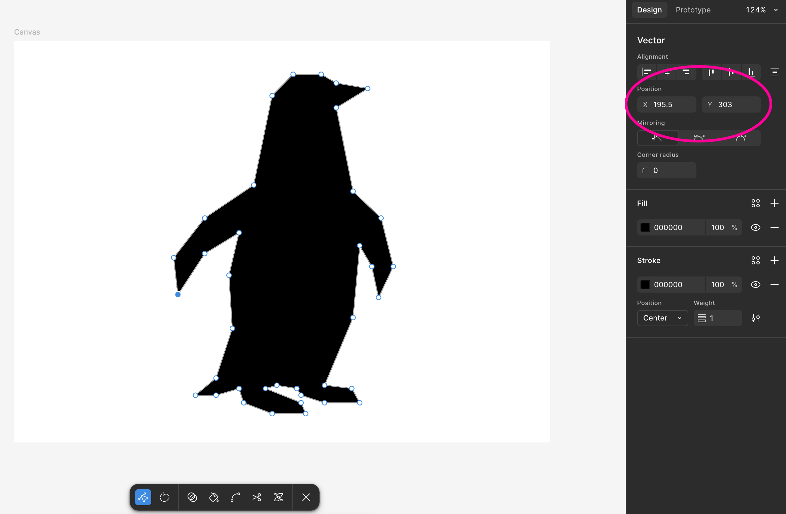

Deze pinquin is eerst getekend in Figma (door een bestaande afbeelding over te trekken), daarna zijn de x & y coördinaten van de punten 1 voor 1 over genomen en als vertices toegevoegd als custom shape
Om dit in P5 te doen, moet je eerst de beginShape() functie aanroepen, daarna voeg je met de vertex(x, y) functie alle punten toe, en als laatste roep je endShape() aan om de vorm af te maken.